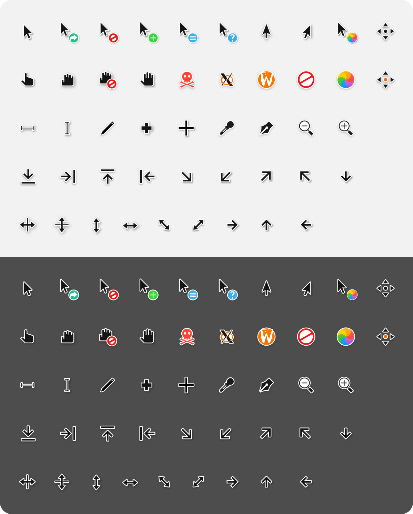

Pop!_OS changes
Gnome¶
Pop!_OS gebruikt Gnome als window manager.
Gnome extensions¶
- Ga naar https://extensions.gnome.org/
- Download en installeer de Browser Extension in je browser (zie link bovenaan de pagina) !!! note The extension allows GNOME to look in the user directory for themes and icons
- Click op
User Themesen activeer deze.
Folder creatie¶
Voor je van start kunt, moet je eerst 2 folders aanmaken.
- Ga naar je home directory.
- Maak de folders
.themesen.icons.
Dracula Theme¶
- Ga naar https://draculatheme.com.
- Vul
gtkin de zoekbalk - Download het zip bestand van Github
- Drag-and-drop de folder in de zip file naar
~/.themes - Hernoem de folder naar
Dracula
Gnome Tweaks¶
Installatie gnome-tweaks¶
Installeer gnome-tweaks met sudo apt install gnome-tweaks
Aanpassingen¶
Open gnome-tweaks en ga naar de Appearance tab en verander het volgende:
- Applications:
Dracula - Shell:
Dracula
Danger
Er zullen vermoedelijk al enkele zaken aangepast zijn, maar om zeker te zijn, is het best om uit te loggen en terug in te loggen.
Icon pack & Cursor¶
Icon pack¶
- Ga naar https://www.gnome-look.org
- Zoek naar
Flatery
- Download de
indigoversie.
Cursor¶
- Ga naar https://www.gnome-look.org
- Zoek naar
McMojave cursors - Download
Installatie flatery & McMojave¶
- Sleep de
flatery&McMojavefolders in de zip file naar~/.icons - Open
gnome-tweaksopnieuw - Ga naar de
Appearancetab - Verander volgende zaken
- Icons:
Flatery-Indigo - Cursor:
McMojave-cursors
Andere theme voor de Shell¶
- Ga naar https://www.gnome-look.org
- Zoek naar
Sweet - New Flavor. - Download
Sweet-Dark-v40.tar.xz - Sleep de folder naar
~/.themesfolder. - Open
gnome-tweaksopnieuw - Ga naar de
Appearancetab - Verander volgende zaken
- Shell:
Sweet-Dark-v40
Andere Gnome extensions¶
Dash to Panel¶
- Ga naar https://extensions.gnome.org/
- Zoek naar
Dash to Panel
- Activeer de extension
Configuratie Dash to Panel¶
- Open de
Extensionsapp - Neem volgende instellingen over:

Note
Indien gewenst, kan je mijn export file gebruiken.
Andere interessante extensies¶
| Nr. | Extensie | Beschrijving | URL |
|---|---|---|---|
| 1. | Dash to Dock | Verandert het GNOME-dash in een dock-stijl interface. | Dash to Dock |
| 2. | Arc Menu | Biedt een toegankelijk en aanpasbaar startmenu. | Arc Menu |
| 3. | User Themes | Stelt gebruikers in staat thema's toe te passen op GNOME Shell. | User Themes |
| 4. | OpenWeather | Toont het weerbericht en de weersvoorspellingen in de GNOME Shell. | OpenWeather |
| 5. | Desktop Icons | Herstelt de mogelijkheid om pictogrammen op het bureaublad weer te geven. | Desktop Icons |
| 6. | Caffeine | Voorkomt dat je computer in de slaapstand gaat. | Caffeine |
| 7. | Clipboard Indicator | Houdt een geschiedenis bij van gekopieerde items op het klembord. | Clipboard Indicator |
| 8. | GSConnect | Integreert je Android-apparaat met GNOME Shell via KDE Connect. | GSConnect |
| 9. | AppIndicator Support | Ondersteunt legacy-appindicatoren in de GNOME Shell. | AppIndicator Support |
| 10. | Night Light Slider | Biedt een schuifregelaar voor het aanpassen van de Night Light-instellingen. | Night Light Slider |
| 11. | Sound Input & Output Device Chooser | Maakt snel wisselen tussen audioapparaten mogelijk. | Sound Input & Output Device Chooser |
| 12. | Places Status Indicator | Geeft snelle toegang tot mappen en recent geopende bestanden. | Places Status Indicator |
| 13. | NetSpeed | Toont de huidige netwerksnelheid in het systeemvak. | NetSpeed |
| 14. | Pixel Saver | Verkleint de titelbalk van vensters om ruimte te besparen. | Pixel Saver |
| 15. | Screenshot Tool | Biedt een verbeterde interface voor het maken van schermafbeeldingen. | Screenshot Tool |
| 16. | AlternateTab | Voegt previews toe aan de applicatieswitcher. | AlternateTab |
| 17. | Dynamic Panel Transparency | Past de paneeltransparantie aan op basis van achtergrondinhoud. | Dynamic Panel Transparency |
| 18. | Coverflow Alt-Tab | Biedt een alternatieve, visueel aantrekkelijke applicatieswitcher. | Coverflow Alt-Tab |
| 19. | Removable Drive Menu | Maakt het eenvoudig om externe schijven te beheren en los te koppelen. | Removable Drive Menu |
| 20. | Extensions | Beheert GNOME Shell-extensies rechtstreeks vanuit het systeemvak. | Extensions |
| 21. | Places GNOME Shell Extension | Voegt bladwijzers en recente bestanden toe aan het toepassingsmenu. | Places GNOME Shell Extension |
| 22. | Panel OSD | Verplaatst meldingen van de GNOME Shell naar het paneel. | Panel OSD |
| 23. | Frippery Move Clock | Verplaatst de klok van de rechterbovenhoek naar het paneel. | Frippery Move Clock |
| 24. | Lock Keys | Geeft meldingen weer wanneer Caps Lock of Num Lock is ingeschakeld. | Lock Keys |
| 25. | Emoji Selector | Biedt een eenvoudige interface voor het invoegen van emoji's. | Emoji Selector |
| 26. | Native Window Placement | Behoudt de grootte en positie van vensters tussen sessies. | Native Window Placement |
| 27. | Battery Status | Toont het batterijniveau en laadstatus in het systeemvak. | Battery Status |
| 28. | Dynamic Top Bar | Verbergt het bovenste paneel bij het maximaliseren van vensters. | Dynamic Top Bar |
| 29. | Refresh Wi-Fi Connections | Biedt een snelkoppeling om draadloze netwerken te vernieuwen. | Refresh Wi-Fi Connections |
| 30. | Bluetooth quick connect | Voegt snelkoppelingen toe voor Bluetooth-apparaten in het menu. | Bluetooth quick connect |
| 31. | No Topleft Hot Corner | Schakelt de actieve hoekfunctie van de linkerbovenhoek uit. | No Topleft Hot Corner |
| 32. | Transparent GNOME Panel | Maakt het bovenste paneel transparant. | Transparent GNOME Panel |
| 33. | Impatience | Versnelt de animatiesnelheid van GNOME Shell. | Impatience |
| 34. | Appfolders Management Extension | Beheert toepassingsmappen rechtstreeks vanuit het toepassingsoverzicht. | Appfolders Management Extension |
| 35. | TopIcons Plus | Brengt appindicatoren terug naar de bovenste balk. | TopIcons Plus |
| 36. | Drop Down Terminal | Biedt een neerklapbare terminal op volledig scherm. | Drop Down Terminal |
| 37. | Workspace Indicator | Toont een indicator voor het huidige werkblad in het systeemvak. | Workspace Indicator |
| 38. | Auto Move Windows | Verplaatst vensters automatisch naar specifieke werkbladen. | Auto Move Windows |
| 39. | CPU Power Manager | Beheert de CPU-prestaties en energiebesparing. | CPU Power Manager |
| 40. | Places | Biedt snelle toegang tot veelgebruikte mappen. | Places |
| 41. | Proxy Switcher | Schakelt eenvoudig tussen proxy-instellingen. | Proxy Switcher |
| 42. | Dynamic Wallpaper | Stelt dynamische wallpapers in die automatisch veranderen. | Dynamic Wallpaper |
| 43. | Steal My Focus | Voorkomt dat vensters de focus stelen. | Steal My Focus |
| 44. | Workspace Grid | Biedt een rasterlay-out voor werkbladen. | Workspace Grid |
| 45. | GSConnect Clipboard Indicator | Synchroniseert het klembord tussen apparaten met GSConnect. | GSConnect Clipboard Indicator |
| 46. | Just Perfection | Voegt verschillende visuele aanpassingen toe aan GNOME Shell. | Just Perfection |
| 47. | Blur My Shell | Voegt onscherpte toe aan de GNOME Shell-interface. | Blur My Shell |
| 48. | Hide Top Bar | Verbergt het bovenste paneel wanneer vensters worden gemaximaliseerd. | Hide Top Bar |
| 49. | Time ++ | Voegt extra functies toe aan de klok in het bovenste paneel. | Time ++ |
| 50. | Vitals | Toont systeemmonitoringgegevens, zoals CPU- en geheugengebruik. | Vitals |
Tilix¶
Tilix is een terminalemulator voor Linux die is ontwikkeld door het Tilix-project. Het is een krachtige en aanpasbare terminalemulator met een groot aantal functies.
Installatie Tilix¶
Installeer Tilix met sudo apt install tilix.
Verander kleurenschema van Tilix¶
- Ga naar https://gogh-co.github.io/Gogh
- Scroll op de pagina tot je een gewenste theme wilt gebruiken. Bedar gebruikt momenteel
Agronaut. - Vul in terminal het Linux commando
bash -c "$(wget -qO- https://git.io/vQgMr)". - Zoek het gewenste schema in de lijst en vul het correcte cijfer in. (bv als je het 9de item wilt nemen, vul dan
09in) - Ga in
timixnaarSettings > Preferencesen selecteer het nieuwe profiel. - Klik op de pijl en selecteer
Use for new terminals.